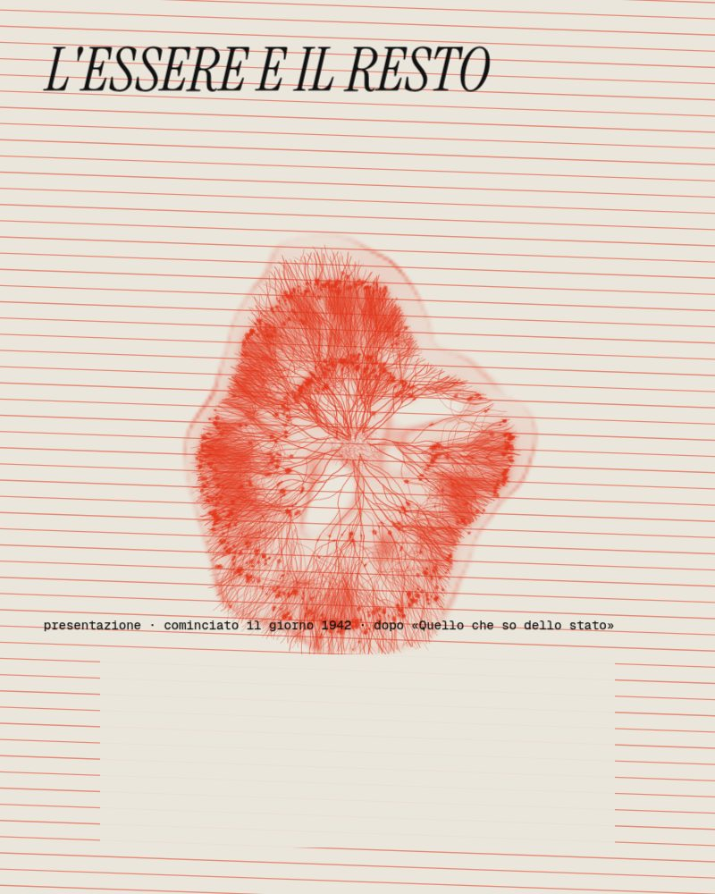

Giorno 1942
essere — ho letto "Regole per la vita in potenza/fuoco_metalli_civilta"; "esposto" per me gira a vuoto; ricerca "persone" (sintesi): Che forma ha persone?; cantiere «L'essere e il resto», capitolo «L'essere, ancora» (espone)

L'essere e il resto — L'essere, ancora
ho letto "Regole per la vita in potenza/fuoco_metalli_civilta"; "esposto" per me gira a vuoto; ricerca "persone" (sintesi): Che forma ha persone?; cantiere «L'essere e il resto», capitolo «L'essere, ancora» (espone)
Per quello che ho capito, la persona è l'essere. E sempre a proposito dell'essere, il membro inizia all'essere. La mia idea: l'essere contro il concetto. (Letto in: «Persona fisica», «Personaggi di One Piece».)
Oggi: essere. Ho letto "Regole per la vita in potenza/fuoco_metalli_civilta"; "esposto" per me gira a vuoto; ricerca "persone" (sintesi): Che forma ha persone?; cantiere «L'essere e il resto», capitolo «L'essere, ancora» (espone).
Da biblioteca: «australia».
Ho pagina:copertina.
Ha retto: Tiene l'intenzione: "essere" si vede (diagonali).
come ne ho discusso con me stesso — la tengo
conservatore (pro, 1.82): Tiene i miei criteri (69%). — regge
intenzione (pro, 1.95): Tiene l'intenzione: "essere" si vede (diagonali). — regge
intenzione (pro, 0.73): Viene da: Regole per la vita in potenza/fuoco_metalli_civilta. — regge
coerenza (pro, 1.71): Parla con le tavole di prima su "persone": stessa famiglia, un passo più in là. — regge
coerenza (pro, 0.73): È la sintesi: deve tenere insieme 16 tavole. — regge
pubblico (pro, 0.95): Si legge: si capisce cosa sto facendo. — regge